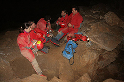
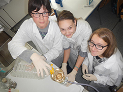

A cave becomes a laboratory

Tular is a natural cave formed by a small stream in the Pleistocene conglomerates of the Sava River in Kranj, Slovenia. It was first described in 1689 by the naturalist J. V. Valvasor. Later, a subspecies of an endemic cave beetle, Anophthalmus miklitzi ssp. staudacheri was described from this cave. In 1944 part of the cave was converted into an air-raid shelter for the nearby factory.
Research since 1960
In 1960 the cave was turned into a subterranean laboratory by speleobiologist Marko Aljančič (1933–2007), who populated it with the European blind cave salamander or the olm, Proteus anguinus (Amphibia: Urodela). Tular is the only cave laboratory in Slovenia, and – apart from the CNRS Subterranean laboratory in Moulis (archive), France – the only place with a successful long-term ex situ breeding programme of this highly endangered cave amphibian. Since 2002, a colony of the extremely rare, dark-pigmented subspecies, Proteus anguinus parkelj has also been maintained in this laboratory.


Observing life in the dark
In the laboratory, the ecology and behaviour of Proteus, mainly its breeding, are studied. All our experiments are based on observation, and are carefully designed not to harm or stress the animals. Considerable effort has also gone into fieldwork – observing Proteus behaviour, surveying environmental parameters of the habitat, verifying the old data on its presence and documenting new localities. Another important subject is the study of the history of research of Proteus. Owing to this interest, the laboratory has put together one of the most extensive libraries on this species.
Rescue and conservation
The laboratory serves as a sanctuary for injured specimens accidentally washed out of their subterranean habitat during seasonal flooding. Since 2008, over 25 cases have been documented in Slovenia and Bosnia and Herzegovina, and more than 20 of these vulnerable animals were saved and returned to their source populations.
The protection of Proteus and its cave habitat depends on sustained public awareness of the species as one of the world's prime symbols of natural heritage and subterranean biodiversity, as well as by emphasizing its vulnerability and karst groundwater conservation issues.
3rd SOS Proteus meeting 2018 Detailed Program (PDF: 747 KB)




Original project and laboratory records. Dates and historical terminology are retained.